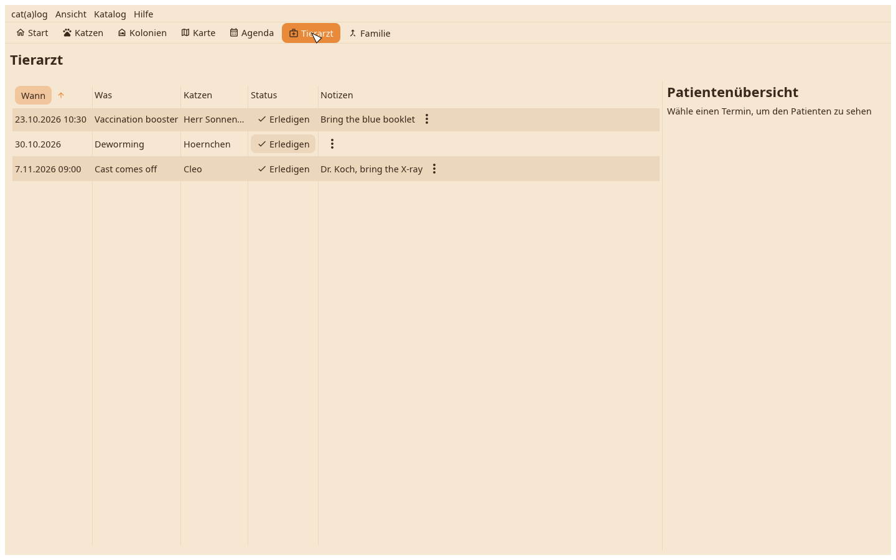
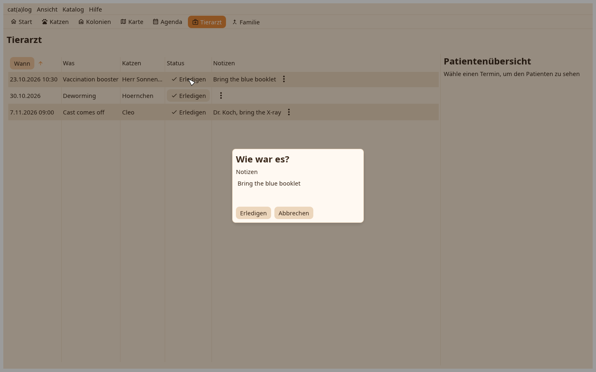

1. Die Tierarztansicht
Die Fahrten und Termine über alle Katzen, offene zuerst; ein Klick zeigt das Patientenblatt.

2. Abschließen
Abschließen fragt, welche Katzen behandelt wurden, und kann einen Wert in ein Feld schreiben, das Impfdatum zum Beispiel. Die nicht behandelten bleiben geplant.
